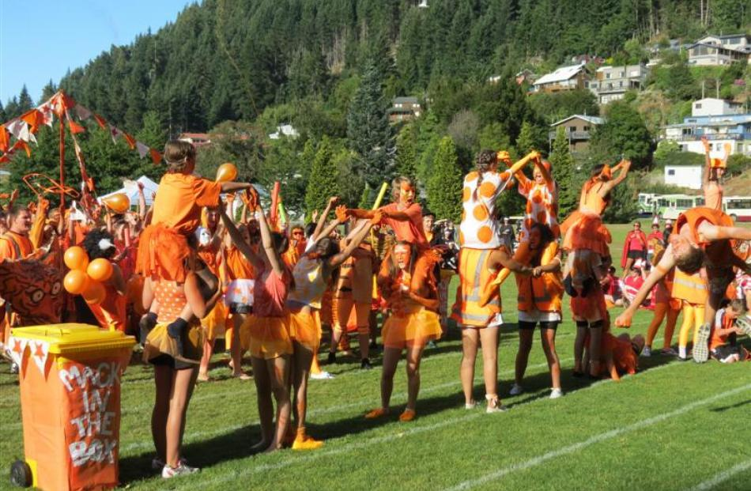
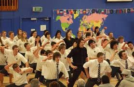
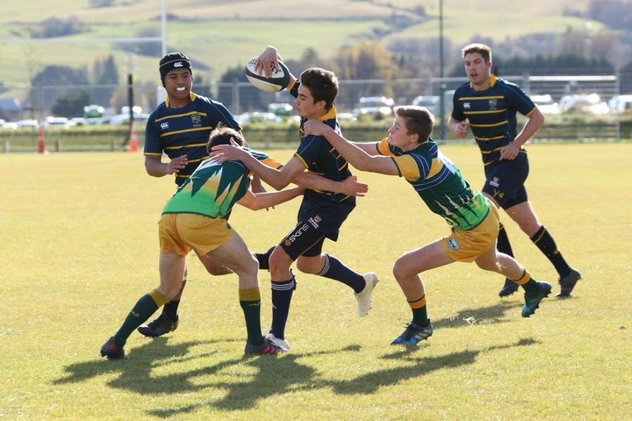

Participation Day

Participation Day is the main house event of the year. It takes place on the first Friday of every year where every house dresses up in a theme related to its color. Then the houses do a march with a song and dance routine followed up by chants. Then the houses split up and do a range of sporting activities for points for the rest of the day. This is a great house activity to start the year with.
Haka Waiata

The Haka Waiata competition is my personal favourite house comeptition. This is the second most important house contest after participation day and is often the most highly contested one. What happens is every house does their own take on the school haka and waiata being marked and the best performance wins the competition. This year Fox house won the Haka Waiate competition.
Extra Curriculars

There is a wide range of extra curriculars availabe at Wakatipu High School ranging from Rugby and Basketball to War games and debating. There truly is something for everyone at this school in the form of an extra curricular activity. The extra curricular expo is a great event to find what is right for you and what you want to get out of it.
Leadership oppourtunities
If you are a born leader there is many options for you at WHS. There are many student leadership oppourtunites at this high school such as council, prefects, student rep,and head students. The councils plan and run events around the school such as mufti days and house basketball and dodgeball. The student rep has a seat on the board of trustees and helps make decisions on the school with the board and being a head student means that you are a leader of the students at this school.